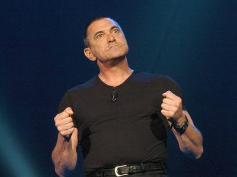
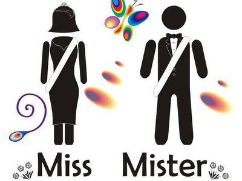
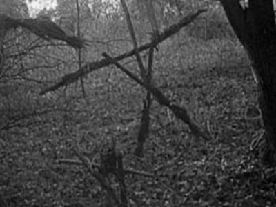
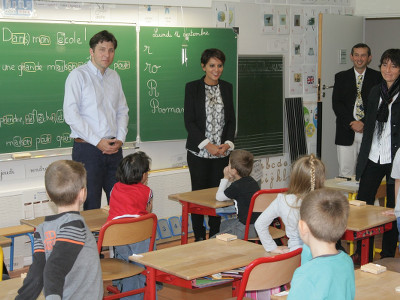
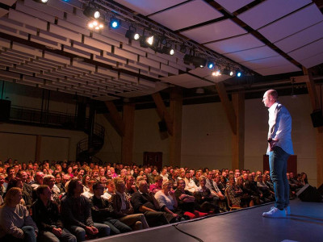

Donald Trump envisage d'ouvrir des CMI dans les universités américaines
Suite à son élection officialisée ce mercredi 9 novembre, le nouveau président des Etats-Unis, Donald Trump,
a décidé d'inscrire dans la constitution américaine un nouvel amendement. Celui-ci aura pour objectif d'imposer
à toutes les universités américaines de mettre en place des Cursus Master en Ingénierie à la Française.
Le président du réseau Figure, Yves Bertrand, a accueilli cette décision avec le plus grand enthousiasme :
Donald [Trump, ndlr] m'a appelé ce matin, alors j'étais en train de tremper ma biscotte beurrée dans mon thé
à la bergamotte. Je n'ai même pas eu le temps de le féliciter pour son élection qu'il m'a immédiatement
parlé du CMI ! Il m'a
dit qu'il trouvait l'idée excellente et qu'il souhaitait l'imposer dans les université Américaines,
rendez-vous compte !
En bon dictateur, il a décidé de l'inscrire dans la constitution. Il m'a même chargé de la rédaction de ce
nouvel amendement. Je vais de ce pas me mettre au travail ! Quelle belle récompense pour le CMI !
Gageons que cet engouement ne sera pas qu'une simple lubie de la part du nouveau maître du monde, et
que François Hollande saura prendre exemple sur ce visionnaire, en inscrivant lui aussi le CMI avec
effet rétroactif dans la Déclaration des Droits de l'Homme et du Citoyen de 1789.
Jean-Marie Bigard parrain de la promo 2016 du CMI Informatique de l'UFC

C'est officiel, cette année ce sera Jean-Marie Bigard, le célèbre comique troupier, qui sera
parrain de la promotion 2016-2017 du CMI Informatique de l'Université de Franche-Comté.
Nous avons contacté le principal intéressé, qui s'est montré enthousiaste et flatté par la
proposition qui lui a été faite :
C'est vraiment un honneur pour moi de pouvoir contribuer à l'excellence de l'enseignement
supérieur en France. Il s'agit d'une promo vraiment cool, des petits jeunes qui en veulent.
J'ai même été informé que certains sont très sensibles à mon humour, à mes blagues, et
qu'ils ont le niveau de devenir les show-men de demain !
L'idée de faire appel à Jean-Marie Bigard pour la promo 2016 a été une évidence comme le commente
Frédéric Dadeau, directeur du CMI :
Lorsque Julien [Bernard, ndlr] m'a raconté le genre de blagues qu'il entendait en TP
avec ce groupe, on a tout de suite conclu qu'il ne pourrait pas y avoir de parrain plus indiqué
que Jean-Marie pour nos étudiants. On l'a immédiatement contacté, et il a dit "oui !" sans
hésiter. Ca nous fait vraiment chaud au coeur.
Jean-Marie Bigard est le 4e parrain des promos CMI d'informatique. Il succède à Duncan McLeod
pour la promo de L2 2014, Chuck Norris
pour la promo de L1 2014 et Ernö Rubik
pour la promo de L1 2015.
Election de Miss et Mister CMI

En point d'orgue de la Nuit de l'Info, le 1er décembre prochain, sera organisé le concours annuel de
Miss et Mister CMI. Au programme : exposé sur le projet professionnel, écriture d'un algorithme
de recherche dichotomique en temps limité, et défilé en maillot de bain dans les couloirs du 4e
étage du bâtiment C, chauffés pour l'occasion.
Rappelons que, pour des questions de parité, il est nécessaire d'avoir autant de candidats
filles que de garçons, et qu'il ne peut pas y avoir moins de 8 candidats de chaque sexe.
Pour le cas du CMI Informatique, un tirage au sort donc sera effectué par
Frédéric Dadeau et Julien Bernard, sous contrôle de la direction des études, pour désigner les garçons
qui concourront dans la catégorie Miss CMI. Les responsables nous expliquent :
A cette époque où on cherche à imposer la parité à tout prix, il est normal que, même
en informatique, on fasse des efforts pour assurer cette représentativité garçon/fille.
L'an passé, cette initiative avait d'ailleurs permis à Emile d'être élu dans la catégorie
Miss CMI 2015. Il avait été départagé de sa première dauphine, Romain, principalement
grâce à son port du bikini et son déhanché qui avait fait tourner toutes les têtes.
L'esprit du CMI aperçu près de Grandfontaine

Jeudi dernier, alors qu'il se promenait à l'orée du bois de Grandfontaine, Jean-Michel a été soudain
intrigué par une forme étrange qui semblait rôder dans les bois. Un être luminescent s'est alors approché
de lui. Sans se laisser effrayer, Jean-Michel a tenté de questionner ce mystérieux visiteur.
Je lui ai demandé qui il était et ce qu'il faisait là. Il m'a répondu qu'il était l'esprit du CMI
et qu'il cherchait à rejoindre l'université de Franche-Comté à Besançon.
Jean-Michel l'a alors chargé dans le coffre de sa voiture et l'a ramené au bureau 410C de l'UFR ST où
il a été pris en charge par le responsable du CMI Informatique. Celui-ci nous raconte la suite :
Il est arrivé mal en point. Certes, le voyage en voiture ne l'a pas arrangé, mais il devait
errer dans les bois depuis plusieurs mois au moment où il a été trouvé. Heureusement, il trainait quelques
restes de pots de thèse en salle café ; il a vite été remis sur pied. J'ai décidé de le garder un peu dans mon
bureau et de lui faire visiter un peu le département info pour qu'il voit du monde et insuffle son mojo
aux collègues.
Une fois son séjour au département terminé, l'esprit du CMI sera relâché dans la nature, où il se mettra
probablement en hibernation jusqu'au printemps prochain.
Après Croisot, Jacquemain et Duffieux, seul l'amphi Sciences Naturelles du Hall de Propédeutique
restait pour l'instant anonyme. Ce sera désormais chose du passé.
En souvenir de la jeunesse Bisontine du leader maximo de gauche (la vraie, pas la fausse),
l'amphithéatre Sciences Naturelles sera rebaptisé Amphithéatre Jean-Luc Mélenchon.
C'est un honneur pour moi. J'ai toujours su que l'université, et en particulier celle de Besançon,
que j'ai fréquentée dans ma jeunesse, était un repaire de dangereux gauchistes. Mais de là à
l'afficher aussi clairement, c'est très courageux de leur part par les temps qui courrent.
En préambule de la cérémonie qui aura lieu le 12 octobre, une semaine complète de festivités sera
organisée. Des portraits de Jean-Luc seront placés dans toutes les salles de TD, et les étudiants
devront chanter l'Internationale, poing levé, à chaque début de cours.
Il se murmure même que Jean-Luc Mélenchon pourrait établir son QG de campagne pour 2017 dans les
locaux de l'Aqua, actuellement vides, et symbole de la lutte des opprimés contre les tyrans.
Il leur avait annoncé "je vais vous défoncer". L'enseignant obtient la relaxe.
Pour Julien, cette journée de septembre était comme les autres. Après avoir démarré son TD de théorie des
langages à 9h30, le brillant trentenaire a, d'un coup, "pété un plomb" quand il a constaté, 15 secondes
après avoir distribué le sujet, que seulement 90% des étudiants s'étaient mis au travail et commençaient
à chercher le premier exercice.
C'est à ce demander ce que les autres attendaient. Du coup, mon sang n'a fait qu'un tour et je me suis laissé
emporter.
reconnait l'accusé dans son box.
Déjà sous le coup d'une mise à l'épreuve pour avoir, l'an passé, été jugé responsable d'un pantalon souillé
à la simple vue de son sujet d'algorithmique et structure de données, Julien leur a asséné cette phrase qui en a choqué
plus d'un :
Vous allez voir, à l'exam, je vais vous défoncer.
Des mots rudes, qui ont été pris personnellement par William (le prénom a été modifié pour préserver
son anonymat). Ce dernier a été retrouvé, après 3 jours d'inquiétante disparition, prostré au fond de
la salle 401C, en boule et dos au mur.
Absent pour ne pas avoir à croiser le regard de son tortionnaire, le témoignage de William aurait peut-être
pu changer l'issue du procès. Le juge a en effet estimé qu'en l'état, "il n'y a pas mort d'homme" et que
"ça ne leur fait pas de mal à ces petits jeunes de se faire malmener un peu de temps en temps".
Malgré le réquisitoire du procureur de la république, qui demandait 6 mois de TIG au service des emplois du
temps, Julien est sorti libre.
Quiproquo autour de la visite de Mme Vallaud-Belkacem

Le 23 août dernier, la Direction du CMI apprenait dans nos colonnes la visite de la ministre
de l'éducation nationale Najat Vallaud-Belkacem à Besançon, initialement pour assister le 5 septembre
à la rentrée des CMI.
Tout le monde s'était mis sur son 31, tous prêts à recevoir comme il se doit notre ministre de tutelle :
discours du préfet, du président de l'UFC, du directeur du collegium CMI, petits fours, champagne et
feu d'artifice devaient ponctuer une journée qui s'annonçait des plus prometteuses.
Or, tout ce beau monde a rapidement déchanté :
On était tous prêts devant l'entrée de l'UFR ST route de Gray, on avait mis nos plus beaux
costumes, et on attendait le cortège de la ministre qui arrivait de la gare Franche-Comté TGV
par le train de 9h32. Vers 9h50, on a vu cet impressionnant flot de véhicules débouler de
l'extrémité de la route de Gray
mais au lieu de tourner sur le rond-point pour rejoindre le domaine universitaire, ils sont
passés tout droit, ils ont longé les Beaux-Arts, et ils sont partis en direction du centre-ville.
Passées la stupeur et l'incompréhension, le coupable a été trouvé. Notre typographe, responsable
du choix des polices de caractères s'est révélé être à l'orgine de ce quiproquo :
On avait fait l'essai d'utiliser la police de caractère "futura" pour notre édition annonçant
la venue de la ministre. Or, dans cette police, le chiffre 1 ressemble comme deux gouttes d'eau
à un i majuscule ! La ministre venait donc faire la rentrée du CM1 et non du CMI ! Je ne suis
quand même pas responsable du fait que les gens ne lisent pas correctement les énoncés !
Maxime Jacquot, qui a dû ranger son discours écrit par sa plus belle plume, commente :
En même temps, cela m'étonnait qu'on annonce qu'elle allait faire la rentrée du CMI à l'école
élémentaire de la Butte, mais on a tous cru que c'était une erreur du journal. Ils en font si
souvent.
La rédaction de notre journal a fait amende honorable, et a aidé à se débarrasser
des petits fours et du champagne. Le feu d'artifice sera, lui, conservé pour fêter
l'obtention du label EUR-ACE par les CMI de l'Université.
Résultat de notre sondage : pourquoi le CMI ?
Avec plus de 500 répondants, et après dépouillement des votes, voici les résultats de notre
grand sondage : pourquoi avoir choisi de faire le CMI ?
Pour éviter de faire de la chimie (55% au total - 100% chez les Info/SCube)
Parce que mes parents m'ont dit de le faire (42%)
Parce que le responsable me l'a vraiment super bien vendu aux JPO (8%)
Parce que j'aime me faire du mal/souffrir (7%)
Parce que j'ai reçu un SMS qui m'a demandé de venir (5%)
Pour avoir un diplôme d'ingénieur (3%)
C'est quoi un CMI ? (2%)
La commission des études se réunira désormais 2 fois par jour, par sessions de 4h pour analyser ces
résultats et mettre en place un plan d'action visant à éliminer ce genre de réponses en vue de la visite
du réseau Figure au printemps prochain.
Le CMI mène à tout !

La carrière professionnelle de Nicolas* (le prénom a été changé pour préserver son anonymat) a pris une
tournure particulière il y a 2 ans. Initialement inscrit en CMI Info, Nicolas a suivi sans encombres le
cursus du starter. Il a terminé à une place très honorable au jury du semestre 1. Sa vie aurait pu suivre
un cours tranquille, s'il ne s'était pas retrouvé propulsé sur le devant de la scène.
En effet, au début du 2e semestre, Nicolas a participé, comme tous ses camarades, au stage d'improvisation
théatrale du CMI. Et là, ce fut la révélation :
J'ai tout de suite beaucoup aimé les différents exercices, et je m'y sentais vraiment à l'aise.
A tel point que le prof m'a laissé préparer, à la manière d'un apprentissage par problème, un
mini-one-man-show d'environ 1h sur lequel j'ai été évalué.
Si cette performance a été saluée par ses professeurs et ses camarades, c'est vraiment lors de la Nuit
de l'info 2016 que la carrière de Nicolas a pris un tournant décisif, avec une prestation qui a été suivie
sur Internet par des millions d'internautes aux 4 coins du monde.
J'en ai tellement ri que j'ai dû changer de pantalon à la fin de la représentation !
commente le directeur du directeur du CMI Informatique, fier de son poulain.
Mais ce qu'ignorait Nicolas c'est que, derrière son écran, un célèbre producteur
avait également apprécié son numéro. Sans attendre, il prit contact avec le jeune homme et lui proposa de
faire une tournée mondiale. Studieux, et la tête sur les épaules, Nicolas ne perdait toutefois pas de vue ses études.
J'ai demandé au Réseau Figure si je pouvais faire compter cette tournée mondiale comme un séjour à l'étranger.
Malheureusment, le réseau a refusé, puisqu'il manquait 2 jours aux 3 mois exigés pour le label.
Nicolas a ainsi dû quitter son CMI. Il en garde néanmoins un souvenir ému :
Le soir après mon show, quand je me prélasse dans mon jacuzzi, entouré de femmes magnifiques,
je ne peux pas m'empêcher de repenser au CMI Info, et je me dis que, définitivement, je suis
mieux là où je suis.
Yohan est actuellement en tournée dans toute la France, il sera de passage à Micropolis, le 30 février 2017.
Tous les billets ont été vendus en quelques heures. Une séance de dédicace est prévue dans la Hall de
Propédeutique l'après-midi du 30.